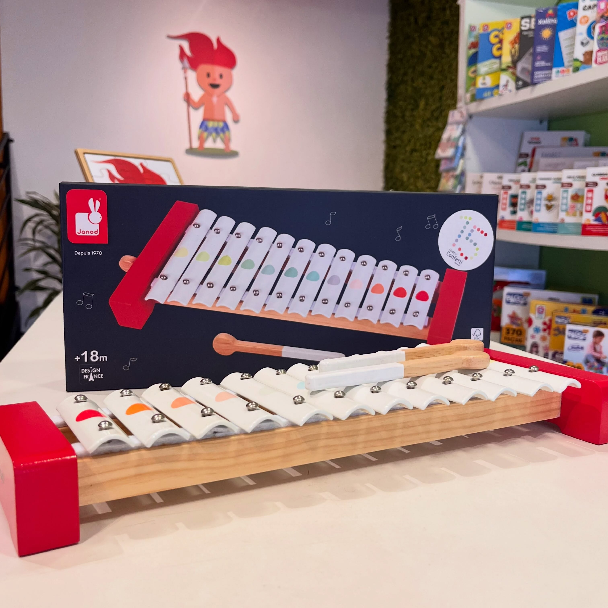
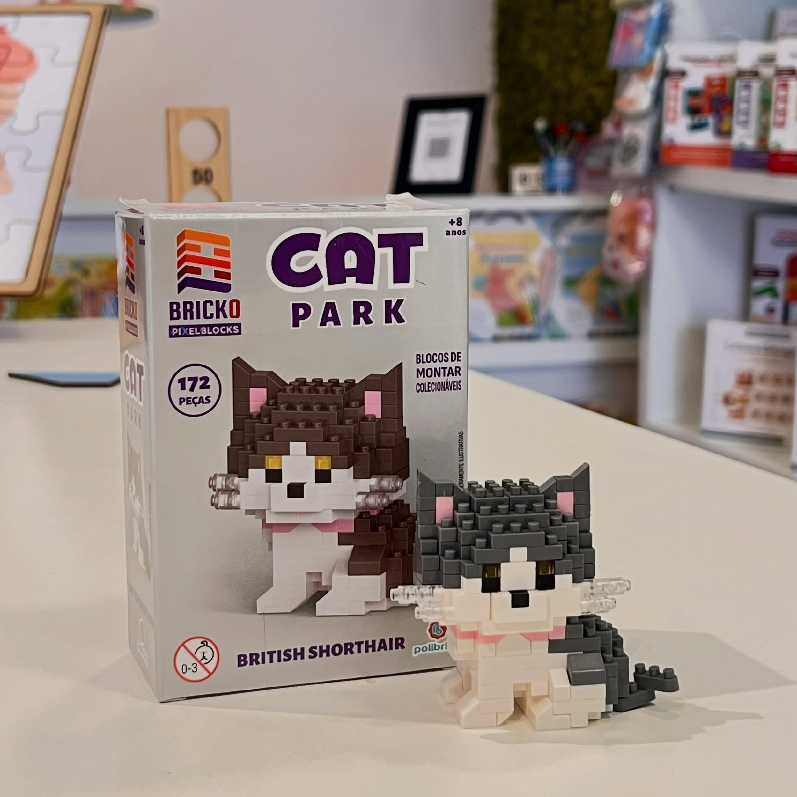
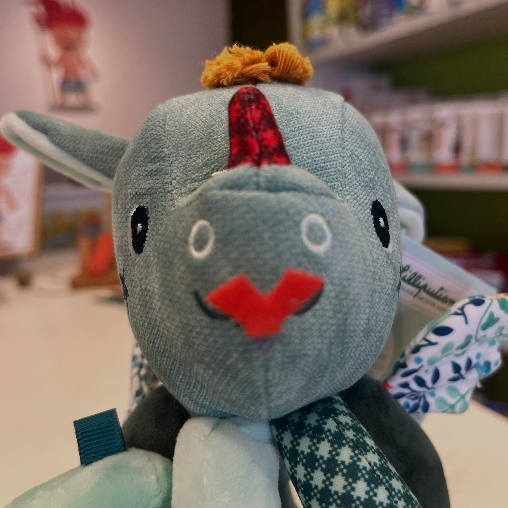

Mais do que comprar um presente.
Você escolhe uma experiência: o primeiro som, a partida em família, o personagem que nasce de algumas peças.


Na Guri, a pergunta não é só “qual brinquedo?”. É “que tipo de descoberta pode acontecer agora?”.
Do post para a casa: produtos que convidam a criança a participar, experimentar e criar o próprio jeito de brincar.
Você escolhe uma experiência: o primeiro som, a partida em família, o personagem que nasce de algumas peças.

A Guri acredita em brincar com significado e diversidade.

Uma seleção a partir dos produtos apresentados nos posts públicos da loja.
“Compartilhamos o brincar e sua diversidade.” É assim que a loja se apresenta em Lavras: com curadoria, afeto e atendimento próximo.